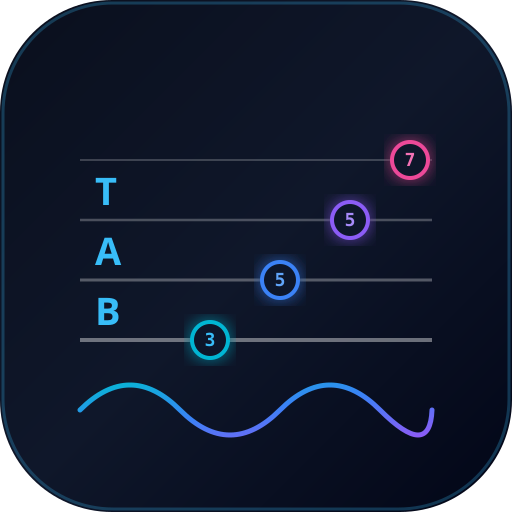

MP3 / WAV 音声ファイルをドロップして自動採譜
またはここをクリックしてファイルを選択（市販音源、バンド練習録音など何でもOK）
AIピッチ分離 ＆ 最適運指決定
● 読込完了
Classic Rock 8-Beat
TIME
00:00 / 00:08

AIベース自動採譜 ＆ 同期練習スタジオ (4弦特化)
またはここをクリックしてファイルを選択（市販音源、バンド練習録音など何でもOK）